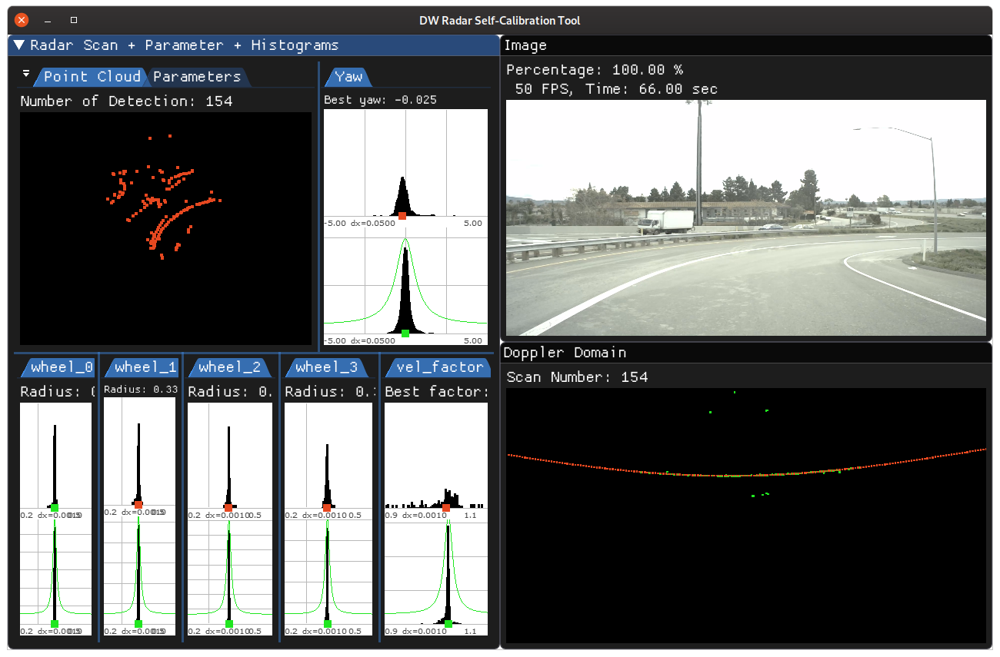
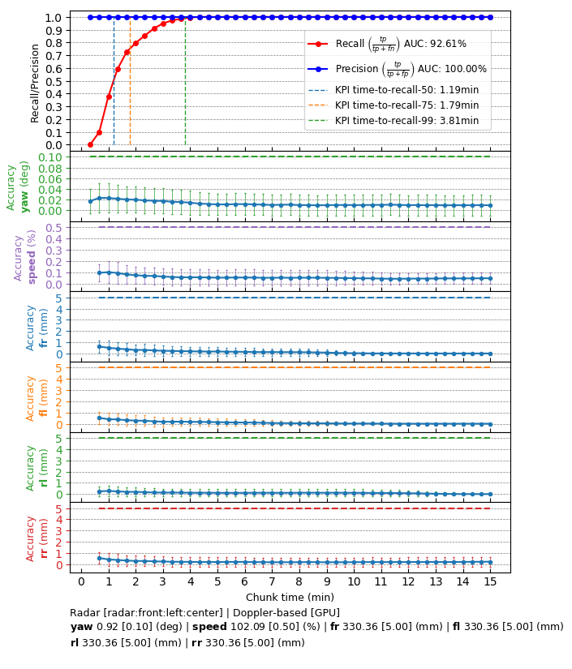

Radar Calibration - Operating Principle
Radar calibration estimates the current sensor orientation (yaw angle) with respect to the vehicle's coordinate frame. This yaw angle is estimated by first using the Doppler signal of radar detections to estimate the radar's motion. Subsequently, the radar motion is matched with vehicle yawrate estimates to estimate the yaw angle. Calibration measurements require a sufficiently large speed of driving.
The Doppler motion observed by a radar can also be used to calibrate odometry speed factors, i.e., a factor which maps measured longitudinal speed to the actual driven speed. In addition the method can be used to calibration individual wheel radii by looking for the radius which maps wheel's rotational velocity to the longitudinal velocity measured by radar. If requested, this calibration will be performed during straight driving maneuvers.

Radar yaw (top) and wheel radii / velocity speed factor estimation histograms (bottom), collected over a period of time
Requirements
Initialization Requirements
- Nominal values on radar calibration
- Orientation(roll/pitch/yaw): less than 10 degree error
- Position(x/y/z): x and y are not used for now, z is less than 10 cm error
Input Requirements
- Sensors: radar calibration requires data from radar and CAN sensors.
- dwVehicleIOState: to perform radar calibration, dwCalibrationEngine has to be fed with
dwVehicleIOState, with information parsed from received CAN events.
- Assumption: Vehicle performs normal driving maneuvers until calibration convergence.
Output Requirements
- Corrected yaw value: less than 0.1 degrees
- Time to correction: less than 2 minutes for radar sensor with 15HZ spinning frequency
Cross-validation KPI
Several hours of data are used to produce a reference calibration value for cross-validation. Then, short periods of data are evaluated for whether they can recover the same values. For example, the graph below shows precision/recall curves of radar self-calibration. Precision indicates that an accepted calibration is within a fixed precision threshold from the reference calibration, and recall indicates the ratio of accepted calibrations in the given amount of time.

Workflow
The following code snippet shows the general structure of a program that performs Radar self-calibration
while (true)
{
{
{
}
}
}
DW_API_PUBLIC dwStatus dwRadarDopplerMotion_getMotion(dwRadarDopplerMotion *motion, dwRadarDopplerMotionHandle_t obj)
Gets the available radar motion estimation result.
DW_API_PUBLIC dwStatus dwCalibrationEngine_getVehicleWheelRadius(float32_t *radius, dwVehicleWheels wheel, dwCalibrationRoutineHandle_t routine, dwCalibrationEngineHandle_t engine)
Get currently estimated wheel radius of a vehicle.
DW_API_PUBLIC dwStatus dwCalibrationEngine_getCalibrationStatus(dwCalibrationStatus *status, dwCalibrationRoutineHandle_t routine, dwCalibrationEngineHandle_t engine)
Returns the current status of a calibration routine.
DW_API_PUBLIC dwStatus dwCalibrationEngine_addVehicleIOActuationFeedback(dwVehicleIOActuationFeedback const *vioActuationFeedback, uint32_t sensorIndex, dwCalibrationEngineHandle_t engine)
Adds dwVehicleIOActuationFeedback to calibration engine.
DW_API_PUBLIC dwStatus dwCalibrationEngine_initialize(dwCalibrationEngineHandle_t *engine, dwRigHandle_t rig, dwContextHandle_t context)
Creates and initializes a Calibration Engine.
DW_API_PUBLIC dwStatus dwCalibrationEngine_addVehicleIONonSafetyState(dwVehicleIONonSafetyState const *vioNonSafetyState, uint32_t sensorIndex, dwCalibrationEngineHandle_t engine)
Adds dwVehicleIONonSafetyState to calibration engine.
DW_API_PUBLIC dwStatus dwCalibrationEngine_getSensorToRigTransformation(dwTransformation3f *sensorToRig, dwCalibrationRoutineHandle_t routine, dwCalibrationEngineHandle_t engine)
Returns the current sensor to rig transformation of a calibration routine estimating this transformat...
DW_API_PUBLIC dwStatus dwCalibrationEngine_startCalibration(dwCalibrationRoutineHandle_t routine, dwCalibrationEngineHandle_t engine)
Starts a calibration routine associated with a calibration engine.
DW_API_PUBLIC dwStatus dwCalibrationEngine_addRadarDopplerMotion(dwRadarDopplerMotion const *radarMotion, uint32_t sensorIndex, dwCalibrationEngineHandle_t engine)
Adds Radar Doppler motion to the calibration engine.
DW_API_PUBLIC dwStatus dwCalibrationEngine_getOdometrySpeedFactor(float32_t *odometrySpeedFactor, dwCalibrationRoutineHandle_t routine, dwCalibrationEngineHandle_t engine)
Returns odometry speed factor, mapping speed as reported by odometry to actual speed.
DW_API_PUBLIC dwStatus dwCalibrationEngine_stopCalibration(dwCalibrationRoutineHandle_t routine, dwCalibrationEngineHandle_t engine)
Stops a calibration routine associated with a calibration engine.
DW_API_PUBLIC dwStatus dwCalibrationEngine_initializeRadar(dwCalibrationRoutineHandle_t *routine, uint32_t radarIndex, uint32_t canIndex, const dwCalibrationRadarParams *params, dwCalibrationEngineHandle_t engine)
Initializes a radar calibration routine designated by the sensor provided to the method.
@ DW_CALIBRATION_STATE_ACCEPTED
The routine has accepted an estimate and calibration continues.
Defines the current status of an individual calibration.
float float32_t
Specifies POD types.
@ DW_VEHICLE_WHEEL_REAR_LEFT
@ DW_VEHICLE_WHEEL_REAR_RIGHT
@ DW_VEHICLE_WHEEL_FRONT_LEFT
@ DW_VEHICLE_WHEEL_FRONT_RIGHT
This workflow is demonstrated in the following sample: Radar Calibration Sample